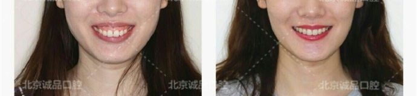
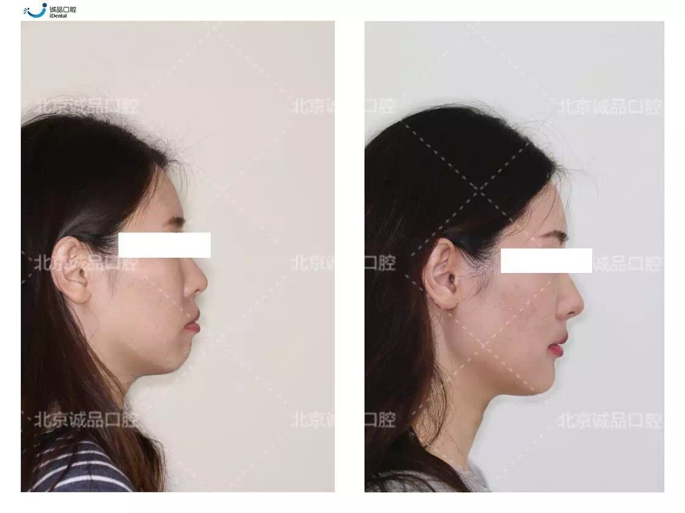
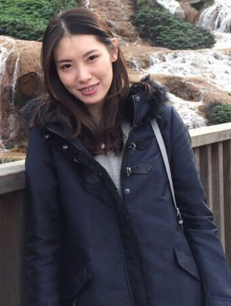

正文: 虽然矫正牙齿的黄金年龄是在16-18岁，但是这并不代表成年之后就不能矫正了。60岁的老奶奶都还在矫正呢，这真的不是问题。
下面是一名30岁女生的真实矫正案例。
——————————————————————————————————————————
下面这个妹子就是深受露龈笑的困扰，虽然她的牙齿很整齐，但是笑起来就是不好看——因为牙龈暴露太多。
这是她矫正前的照片，露龈笑的问题没有过分暴露，但是上前牙突出，呈微微龅牙状。
再来看笑容的近照。我们认为，一个完美的笑容，应该在微笑时上前牙完全暴露，同时牙龈组织大约暴露1 mm，牙龈组织的暴露最好不超过2～3 mm。可以很明显看到这个姑娘上方牙龈暴露大大超过2mm，牙龈暴露过多导致露龈笑。
然后她找到了田岳红医生进行矫正。医生给出的方案是拔除四颗4号牙，打两颗种植钉。
经过两年的矫正，效果特别的好。
医生用了种植钉，把牙齿向上压，导致她们的颌平面发生变化，唇齿关系发生变化，笑容美观程度得到了极大的改善。

除了露龈笑的问题得到完美解决，侧貌也发生了翻天覆地的变化，原先突出的下嘴唇收了进去，完美符合直面型。
看一下不同阶段的牙齿变化，我们可以清楚看到在支抗钉的作用下，暴露过多的牙龈在慢慢回收。 那到底为什么就收了个牙龈，就感觉气质高了无数个LEVEL？
我们再来对照下完美微笑的四个标准：
1）笑起来的嘴型呈半月形
2）上排牙龈线与上唇下缘一致
3）上排牙齿齿缘刚好碰到下唇
4）牙齿大小符合黄金比例：
可见，在医生的帮助下，姑娘最后收获了完美的微笑曲线，所以笑起来才那么好看。大部分人的牙齿都无法自然满足完美微笑的要求，但是正畸医生可以帮你满足啊！矫正过后，你就能收获一个完美的微笑。

这是姑娘矫正结束后，前后的生活照对比，同一个角度的照片，就牙齿变化了下，是不是感觉像变了个人？
矫正完后，姑娘自拍变得爱笑了，一口大白牙真的气质很出众！
所以25岁矫正真的不是什么问题，只要你自己觉得值得，能让自己变健康变美，为什么不能？决定了，去做就是了~：）